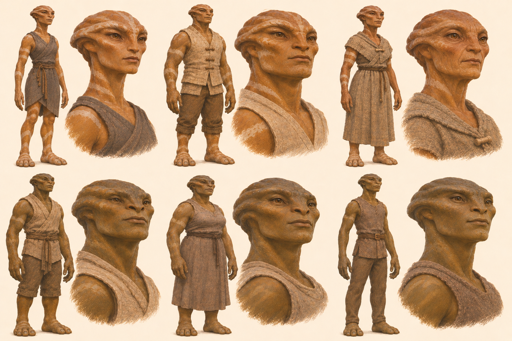

Seven final peoples references
All seven current designs are final. Approved lore · Handoff · Reference records
KR1 · Kitefolk · sharper face
Final visual reference; lore approved in SETTING.md

Final Kitefolk visual design: slender finger-braced gliders with mottled membranes, angular faces and long pointed noses. Their high-village lore and gliding limits are in SETTING.md.
GR1 · Glimmerfolk · denser light
Final visual reference; lore approved in SETTING.md

Final Glimmerfolk visual design: slender bodies, long necks, broad ear-fans and dense blue face/arm glimmers. Their developed undercity, mood signalling and casting flare are established in SETTING.md.
PL7 · Moor folk · final visual range
Final visual reference; lore approved in SETTING.md

Final Moor folk visual range: all six long-limbed, strongly shaped faces with neck/shoulder ruffs retained. Their cold upland homes and community lore are in SETTING.md.
PL3D · Ashborn · final visual range
Final visual reference; lore approved in SETTING.md

Final Ashborn visual range: ordinary-sized raised dead with cold pallor and restrained old scars. Dominion allegiance, repaired bodies and weak souls are established in SETTING.md.
PL8B · Banded folk · final reference
Final visual reference; lore approved in SETTING.md

Final Banded folk reference: salt and silt variants share brow, cheek, nose and body structure, with colour, bands and modest build variation. Their regional homes, trade and mixed families are established in SETTING.md.
CR3 · Crest folk · final reference
Final visual reference; lore approved in SETTING.md

Final Crest folk reference: swept head crests integrate with smaller crests on shoulders, chest and arms. Their limestone valleys, quarry towns and learned craft traditions are established in SETTING.md.
CO1 · Greyhides · final reference
Final visual reference; lore approved in SETTING.md

Final Greyhide reference: rounded grey body, broad calm face, short sturdy legs, fine hands and no tail. Their cold northern coasts and insulated bodies are established in SETTING.md.